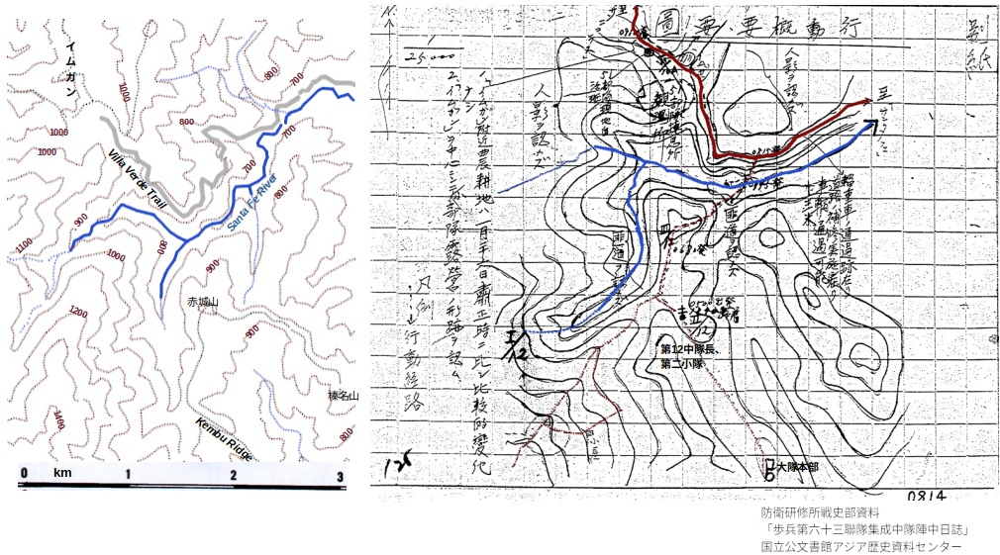

ルソン島地図 - 日本軍の地図、米軍の地図¶
地を這う歩兵戦では、わずか10mほどの土地の起伏が部隊の命運を左右する。大岡昇平「レイテ戦記」は、レイテ島東岸、パロ(Palo)近くの標高100m余の一見どうということもない丘("Hill B") [usleyte] をめぐる攻防を描く。日本軍部隊は入り組んだ地形を巧みに使い、まともな地形図をもたない米軍部隊を苦しめたのだった。
{kind=link}
{kind=link}
目次
不備な地図による作戦指示¶
一方、ルソン島の第14方面軍(尚武)には20万分の１より詳しい地図がなかったという 鐵兵団 (第10師団)下士官だった人の伝聞情報がある [mitsunobu] 。
{kind=link}
昭和十三年版呂宋島附近二十万分一地誌圖被覆範囲。¶
鐵兵団は昭和19年12月、台湾からルソン島に向かった。兵団司令部は空路で入り、ついで主力第一陣が輸送船で10日にマニラに着いた。第二陣は輸送船三隻に分乗した。二隻はリンガエン湾の北サンフェルナンドに入港したが、うち一隻は米潜水艦の魚雷によって轟沈して兵員の半分と貨物のほとんどを失った [tetsu47] 。三隻目は緊急避難的にルソン島北端のアパリ東方、カサブランカ(Casambalangan)湾に投錨したのだったが、積載物の半分ほどしか揚陸できなかった 1 。
山下将軍、武藤参謀長の第14方面軍(尚武)司令部には20万分の１より詳しい地図がなかったという伝聞を記したこの元下士官は、ルソン島動員まで鐵兵団司令部勤務だった情報通である。地図が不備だったという話は、次の史実記載で裏付けられる [tetsu47] 。
(師団は)主力を以て「サンホセ」北方高地(「プンカン」周辺地域)に陣地を占領する目的を以て参謀長をして陣地を偵察せしむると共に一部を「カミンガン」方向に派遣し道路橋梁を破壊し敵の前進を妨害せしめ主力を「ブンカン」付近に前進せしめたり。然るに偵察の結果によれば図上判断( **地図の不備** )と異り「サンホセ」北方の高地帯は
（１）「リサール」ー「パンタバンガン」ー「カラングラン(Carrangran)」道方面は通過容易にして然かも開通し且「カラングラン」平地は有力なる空挺部隊の降下に適し陣地左側後方に対する脅威大
（２）高地は所々森林点在しあるも一般に開通し絶対制空権を確保しある敵に対する防御に適せず
（３）陣地右翼は山地に托するを得るも全般の地形上中央部突出の止むなきに於て「ルバオ」「カミンガン」方面よりする攻撃に対し右翼を著しく脆弱にす
（以下、略）
尚武指示により、鐵兵団主力は昭和20年1月10日頃サンホセ(San Jose)周辺に集中した。尚武の意図は、米軍が5号道路を北上しようとするのを、サンホセ付近で阻止するというものであった。しかし、鐵兵団が現地を踏査した結果、不備な地図で決められた尚武指示にそのまま従うことはできなかったというのである。尚武との通信が通じない状況のなか、結局、師団長判断により、主力をもって 「バレテ(Balete)」峠 東西の線に陣地を置くことにした。すなわち、一月中に部隊を逐次「プンカン(Puncan)」「サンホセ(San Jose)」から北上させ、三月初までに「バレテ」峠東西に側窟陣地、掩濠施設、地下連絡通路を作り上げた。また、峠の北側に弾薬・糧秣の保管設備を設けた。
{kind=link}
バレテ峠周囲(昭和20年2月中〜3月初).¶
[HolmesJr] による元図に書込。
鐵兵団の当初の懸念通り、プンカン付近の守備隊陣地は東側(陣地左側)のカラングラン(Carrangran)経由の道から簡単に迂回され、また、西側(陣地右側)ルパオ(Lupao)方面からも破られた。「バレテ」峠手前の線に米軍が到達したのは3月末、第10師団歩兵第63連隊(63i)は逐次増援も得つつその線を一ヶ月以上もちこたえた。
バレテ峠の戦いは、ルソン島日本軍の食料供給、「六個兵団生存の根拠たるカガヤン河流域平地」に通じる「5号道路の要衝を確保する」戦いだった。鐵兵団はその責任をになって奮戦したものの、米軍の「砲爆撃は猛烈を極め・・・戦車を先頭として攻撃し来るを以て守兵は陣地と運命を共にするを常態」とした。兵団はこの戦いで「八十五乃至九十五パーセント」の兵員と「之に応ずる兵器弾薬を喪失」した。
バレテ峠を突破されてしまうと、そこから「バガバッグに至る地域は平坦広闊、緩徐な下降地帯であって、 バギオ、ボントック、バンバンの三角複郭 は至難」。尚武の 小沼参謀副長 は3月初めバンバンにいて、こう考えていた [hitou329] 。そのころ、小沼副長とバギオにあった尚武司令部とはほとんど通信不通だった。
- 1
どうにか野砲を上陸させた砲兵隊が、車はおろか牛馬もない状況で悪戦苦闘するさまを、アパリにいた山本七平が目撃している。(「一下級将校の見た帝国陸軍」、朝日新聞社、昭和51年12月)
- usleyte
M. Hamlin Cannon, "UNITED STATES ARMY IN WORLD WAR II, The War in the Pacific LEYTE: THE RETURN TO THE PHILIPPINES", OFFICE OF THE CHIEF OF MILITARY HISTORY DEPARTMENT OF THE ARMY WASHINGTON, D. C., (https://history.army.mil/html/books/005/5-9-1/CMH_Pub_5-9-1.pdf), pp. 158-167; Jan Valtin, "Children of Yesterday", The Battery Press, Nashville, 1988.
- ruson20
- mitsunobu
- tetsu47(1,2)
第１０師団（鉄兵団）史実資料 昭和２２年２月１５日
- hitou329(1,2)
防衛研究所、比島決戦シリーズ、「捷号陸軍作戦<2> ルソン決戦」、p.329.
- cmh13_2
CMH Pub 13-2 Reports of General MacArthur: Volume II Part II Japanese Operations in the Southwest Pacific Area by Supreme Commander for the Allied Powers; MacArthur, Douglas, 1880-1964; Willoughby, Charles Andrew, 1892-1972. (Public Domain Mark 1.0)
鎌田隊のルソン島地図リスト¶
高精度な地図が最も求められたのは、米軍のルソン島上陸前の作戦準備期間からせいぜい上陸直後、すなわち昭和十九年から二十年四月初旬までだったろう。以降は島の全域で、陣地設定を考えるより速く米軍が進攻してくるような状況となった。その意味で、昭和十九年時点でルソン島の日本軍の地図の配備状況はどうだったのだろうか。敗軍は地図も含めて文書類は焼却してしまうので、実態を把握するのは困難である。
第16師団(垣兵団)歩兵第33聯隊第1大隊(鎌田隊)の作戦用地図保有状況報告(昭和19年3月)が残っている [33kamata] 。このとき鎌田隊はルソン島中部ラグナ地区に駐留していた。その翌月にはレイテ島に第16師団が転進する。そのための引継準備の一環と考えられる。
それによると、ルソン島関連では、バタン、コレヒドール、マニラの1/3,680や1/4,800の大梯尺図がある。また、5万分の1前後の地図は、マニラ近郊やルソン島中部、南部のところどころ10箇所前後のものがあるが、ルソン島北部はほとんどない。
特にルソン島北部まで覆う地図シリーズについては、おおむね次の二種類しかリストにない。
10万分の１の「要図」：リストにある地図名称は、昭和十六年十一月初版、空中寫眞測量による一連の要図とほぼ一致する。各図中の被覆範囲は限られている。空撮要図は全部で18葉作られ、 13葉がスタンフォード大学図書館に残っている 。
20万分の1図：第14方面軍には、大正十三年(1922)参謀本部製版の地図の
暈滃 式を等高線式に引き直し、さらに、若干の地誌情報を付記した 昭和十三年版(1938) 、あるいは、USC&GS 1931-1935年版を暈滃 式表現のまま流用した昭和十九年(1944)九月調製の地誌図などがあった。前者はルソン島中部から北部を全14葉におさめており、うち12葉をスタンフォード大のオンラインで見ることができる。後者は大本営陸軍部の戦訓特報の「『ルソン』島作戦に於ける教訓並に経過の概要」の兵要地誌図などに用いられた。
{kind=link}
USC&GS地形図 [uscgs35] による兵要地誌図例。¶
赤字： 荒木兵団の転進ルート 関係地名。
以上、鎌田隊の報告リストは、上記伝聞情報、すなわち第14方面軍には20万分の1より詳しい地図がなかったことを、おおむね裏書きするような内容である。
現在、国内外の地図アーカイブには、ルソン島の5万分の1地図として、次の3種類を見つけることができる。
米軍1922年製の20万分の1地図を昭和5年(1930)に陸軍が5万分の1地図に拡大したもの [yc651] 。5万分の1とはいえ、情報量と精度は20万分の1相当でしかない。
昭和19年空中写真測図、昭和20年複製のルソン島東側の一部。写真からの作図は略集成法による。各図版のカバー範囲は狭い。
昭和19年11月に「假製呂宋島五万分一圖」(参謀本部)。東北大学の 外邦図デジタルアーカイブ で検索するとルソン島で五万分一図というとおおむねこれであり、全74葉ある 2 。「リパ」の図には、1904年乃至1914年調製米版1/31,680図を縮図複製したものと記されている。「バタンガス」では、1904年乃至1941年調製米版1/31,680図によるとなっている。どちらも、昭和19年11月に空中写真による修正あるいは「補測」を加えたものとある。製作は威15885部隊(南方軍総司令部第２測量隊)や威1373部隊(同第13野戦測量隊)等、また、地図左下余白には尚武第1600部隊(すなわち第14方面軍司令部)と印刷されている。現在アーカイブされている図様が複製されたのは昭和19年末〜20年である。部隊に配布されることがあったのかどうかは定かでない。
鎌田隊のリストにあるルソン中部、南部の5万分の1地図の図葉名称は(3)-(5)の図葉名称と必ずしも一致しないので、これら以外のシリーズ。というより、単発的な5万分の1図があったらしい。リストには4万分の1や6万分の1といったものもあるが、おそらく1 km/1 inch、1 mile/1 inch に対応する。ルソンの日本軍はもともと占領地業務のために米軍地図の複製を自ら行っていたという [tanaka05] のでその類と思われる。が、系統的に整理されていたようには見えない。
日本軍はもともとフィリピンを重視しておらず、昭和19年4月までルソン島には陸軍の正規師団は第16師団（垣）のみだった。その師団をレイテに移した後、昭和19年6-7月以降、新たに師団を急ごしらえしたり、別方面から師団を移したりと慌ただしく体制を拡充した。しかし、兵員、装備の多くは輸送途中で失われた。各部隊に地図が十分行きわたってなくても不思議ではないような状況だった。
- 2
これらの假製地図の一部は スタンフォード大学のEarthWorks で見ることができる。
- 33kamata
鎌報第十九号「作戦用地図保有現況調査の件報告」、昭和十九年三月二十四日
- yc651
五万分一呂宋島圖 -- 1:50,000 Rusontō zu, Maps Index, Stanford Digital Repository,
- tanaka05
田中 宏巳（防衛大学校）,「第二次大戦における現地部隊の地図作製について」, 外邦図研究ニューズレター、2005年3月
- uscgs35
Northern Luzon, Philippine Islands, Southern sheet, 1:200000 , H. Otley Beyer Map Collection, National Library of Australia, http://nla.gov.au/nla.obj-580717130; 「１／２０万 呂宋島兵要地誌図 第５号」JACAR（アジア歴史資料センター）Ref.C14020753700、呂宋島兵要地誌図 １／２０万（防衛省防衛研究所）
地形図と要図¶
司令部と各部隊とは共通の地形図をもって情報の授受を行う。一例として、サイパンの防空計画の資料がある。そこでは、聯隊本部と各大隊、中隊とが2万5千分の1サイパン島地形図上に方眼符号をつけて必要な情報をやりとりする仕方を定めている。しかし、防空ほど高精度な位置情報や即時性が必要ない場合には「要図」を用いる。
要図 とは 部隊配備や偵察、戦況、さらには地誌を報告する際に添付する略地図のことだが、その作製には一定の規定があるため「要図」と呼ばれる。報告の「煩雑なる字句」を省き、迅速正確に事態を伝えるために用いる。必ずしも梯尺に拠る必要はないが、距離、尺度を図中に注記する。地図に基づいて作製する場合は、必要に応じて原図を補正し、方位記号の下に梯尺を記す。
要図の種類とその梯尺については次の指示が例としてあげられる [bouei_s1612] 。
[一般図、例えば陣地全域の編成等] 1/25,000
[街工物配置等を具体的に示す場合] 1/10,000
紙面の大きさは半紙1~2枚が望ましいとする。
要図例1: Laoag東方-矢野中隊討伐隊¶
もとにした地形図がわかる例として、ルソン島北西海岸の町ラオアグ(Laoag)東側でのゲリラ討伐戦の要図がある。20万分の1地形図(上記(2))をほぼ忠実になぞっている。

矢野中隊討伐隊要図¶
( 参照： 矢野中隊日誌 )
要図例２: 矢野中隊Dugo陣地¶
また、おそらく米軍製の古い大梯尺図を現地で補って使っていたと思われる例として、ルソン島北東端アパリ(Aparri)-ラロ(La-lo)にいた第103師団下にあった独立速射砲第18大隊が昭和20年2-4月に5号道ぞい ドゴ(Dugo)付近 に陣地を構築した。陣地構築の中心となったのが矢野隊である。要図(1万分の1)がある。ドゴの三叉路を少し南に下ったあたりを大隊の防御第一線、Jurisdictionの集落から東に1kmほど入った湿地に囲まれた台地「山吹台」周辺を固守すべき第二線とした。台地の高さ200は200ftであろう。付近の最高点は60mほどである。

(右)矢野中隊陣地(1945年4月30日)要図(河に色付けした)¶
NAMRIA の地形図 3 を拡大したものと比べると、砂州形状や道路には自然の経年変化や開発による違いがある。しかし、上記(1)の空中寫眞測量呂宋島十万分一圖などよりは集落の配置など詳しく正確である。ft単位の標高点の値などを見ると、大梯尺の図、それも米軍由来の地形図が各隊に配布されていて、それを基礎に要図を作ったように思える。ドゴはその北で5号道路と小港ゴンザガ(Gonzaga)に向かう道との三叉路がある要所なので、大梯尺図があったとして不思議ではない。
要図例3: 大園隊Imugan周辺兵要調査¶
しかし、満足のいく地形図がない場合はどうしたろうか。ルソン島ではないが、レイテ島に移った垣兵団が昭和19年9月8日に「情報収集計画」を出している。レイテはもう米軍来攻が目前で計画そのものは遅きに失したが、現地部隊の地図作製能力の一端を示す資料である。 兵要地誌調査 の着眼についの詳しい指示に続いて、 地形図 と要図との作製について次のように述べている。
地形図は各部隊に区域を配分して実測し兵団に於て之を集成し兵要調査の進捗
に応じ更に兵要地誌図を作成す空中写真の利用に努む
測量まで実施したのかは分からないが、 バレテ峠周囲に陣地を構築した第10師団主力 は、1月中「地形の細密なる調査」を実施した。また、合わせて「線上交通路」に重点を置いて兵要調査を行った。このような場合、「水流、道路、山々の状況が、次々に要図となって大隊本部に集まってくる」 [mitsu62] 。本部ではそれらをまとめた要図を作り上げる。
線上交通路中就隣接部隊間の連絡路及陣地に於る間道を主として左記事項を
明示するものとす
1. 道路の利用法（自動車、戦車、車両、駄馬、人）
2. 道路の隘路(路盤の構造、橋梁、迂回路)
3. 道路両側の地形(村落の状況、開？度、耕作地)
4. 水流、沼沢(方向、広？、利用度)
5. 匪状。利用資源其の他
峠から南西の町サンニコラス(San Nicolas)に発して、バレテ峠北側に迂回接続する山道がある。日本軍はこの山道を両端の集落名から「サンタフェ(Santa Fe)ーサンニコラス(San Nicolas)道」あるいは「サンニコラス道」と呼び、米軍は"Villa Verde Trail"と呼んだ。戦史では途中の峠の名前によって「サラクサク」方面という。
1月21日、歩兵第63聯隊(聯隊長・林葭一大佐)第2大隊(根本部隊)は「地形の細密なる調査の結果、『サンニコラス』方向に対する考慮大」となったとし、部隊配備を手直しした。その少し前、プンカンで編成したばかりの集成中隊（隊長: 大園中尉）は、すでにサンタフェ西側、イムガン(Imugan)の南あたりに露営していたが、この方針変更にともない、そのあたりに棲息家屋、横穴、対爆個人壕、掩蓋銃座、さらに、それらを結ぶ坑道を構築し初めた。陣中日誌には「○ ○ 高地」としか書かれていないが、マレコ山の山裾が「サンニコラス道」方向に張り出したあたりである（カラバロ山系地図 ）。
2月5日、地形偵察中の一少尉がイムガン方向から射撃される事件が起きた。翌日、大園中隊はイムガン方面への粛清討伐と兵要調査に出た。
1. 兵力 指揮班中島曹長以下九名、第二小隊半ｹ分隊(分隊長以下四名)、第三小隊半ｹ分隊(分隊長以下四名)
2. 服装携行品 全員小銃、鉄帽、昼食、弾薬各人30発
3. 出発時刻 二月六日五時
4. 行動区域 第二小隊陣地ー第三小隊陣地ー「サンニコラス道」ー「イムガン」
5. 住民は婦女子と雖も捕獲若は射殺するものとす
この日は結局、人影を認めることもなく帰還した。このときの兵要調査要図が添えられている(＊ここでは少し着色した)。
梯尺2万5千分の1の要図(右)にはおおよその地形は把握されているように見える。方眼が引かれているのは、大隊本部で各隊からの要図をまとめるためであろう。
ルソン島については残されている書類が多くないので、現在見ることのできる要図が全体を代表しているかどうかは分からない。しかし、わずかに残っているものを見ると、各部隊はその担当地域については断片的にも大梯尺地形図相当の情報を用意し、ていねいに地形偵察も行い、不足部分を補っていた。しかし、それらの情報は聯隊あるいは、せいぜい師団内で共有されても、方面軍司令部とまでは共有されていなかったかもしれない。どのみち方面軍司令部はそんな細かいところまで見ていられない状況にあった。
とはいえ、第14方面軍司令部(あるいは日本軍指導部)は、地誌図のうえに生身の兵士たちをおいて見る想像力を欠いていた。アパリ(Aparri)付近にいた 第103師団 への数百キロに及ぶ長距離転進命令なども、同じ想像力の欠如である。
来る日も来る日も陣地を構築させられ、しかし、突然の命令によってその陣地を捨てて、満足な武器銃弾も食料もなく雨中の行軍や密林内の敗走で命を落とした人たち、また、激しい砲爆撃にさらされながら狭い壕のなかで戦い続けた人たち、あるいはそこを捨てて果敢に斬込みに飛び出して行った人たちのことを思うと、せめて彼らの日々を記した陣中日誌や要図だけでも、もっと残っていてほしかったと思うのである。
- 3
Mapbox Satellite Imagery などではさらに開発の進んだ状況が見られる。
- bouei_s1612
｢工兵第１３連隊宜西地区陣地構築作業資料 ２／２ 昭和１６年～昭和１７年｣ 防衛研修書戦史室
- mitsu62
梅崎光生、「ルソン日記」、沖積舎、昭和62年3月
米軍のフィリピン地図(1899-)¶
米軍史家は日本軍の地図をめぐる状況について次のように述べている [tr00smit] 。
日本人は占領中にフィリピンの島々の地図を作ろうという試みを系統的に行った
ことはなく、米国による戦前の図版にほぼ依存していた。フィリピンのどの地域
においても米軍部隊は良好な日本軍地図を押収することができなかった。見たと
ころ、日本人は限られた特定の場所についての粗く不正確なスケッチを作るとい
う以上には、地図作製活動は敢えて行わなかったようである。
米軍がルソンの地図作製に着手したのは早く、1899年、フィリピン-アメリカ戦争のさなかである [mapwork00] 。
進攻に備えて、入手した全てのスペイン製地図を組合わせ、トレースし、青焼き
を作った。これらの地図は概して、フィリピンの未開であることを考えると、特に
軍用道地図のカバーする地域などにおいて、精度は悪くなかった。
合衆国軍は遠征の都度、道路地図を作成し、さらに、島嶼駐留以来、徹底した偵察
が命ぜられ、司令部将兵によって実行されている。現地で1マイル＝2〜3インチの
縮尺で作られた地図は、司令部で1マイル＝1インチに縮小されている。最終的には
列島全体をカバーする軍用地図を用意し、どの区分図も独立して完結したものとす
る予定である。今はまだ初期段階に過ぎないが、ルソン島中央部の地図はほぼ完成
してきている。
（以下、略）
John Biddle, Captain, Corps of Engineers,
U. S. A.. Chief Engineer of the Division.
日本軍がフィリピンに侵攻した1941年末時点で、フィリピンの米軍は下記の地図を保有していた [ceinterigence] 。
USC&GS 4 のフィリピン全図(1/600,000)
主な島嶼のUSC&GS地形図17葉(1/200,000)
1911-1914の米軍調査に基づくルソン島の大部分をカバーする地形図(CE topgraphic map 1/63,360)
1934-1935の米軍調査に基づき、若干の修正を加えたルソン島要所の地形図(CE topgraphic map 1/31,680)
ただし、そのほとんどは青焼きによる複製だった。
また、マニラ近郊に軍の地図印刷所を持ち、マニラ陥落まで稼働させていた。日本軍の攻撃が激しくなると、地図原版や印刷機械はマニラから退避させた。しかし、最終的には厳選した217枚の原版のみをオーストラリアに潜水艦で運び出し、将来の反攻に備えることとした。
フィリピン地図改訂作業については1943年を通じて検討を進め、1944年春には計画ができあがった。さらに、夏には空撮の重要度分類を行った。ルソン島ではアパリ付近、リンガエン湾周辺、等が最重要とされた。この重要度分類は、反攻作戦の進展が予想より速かったため、10月には改定された。
戦域レベルでの作戦計画には1/25,000、1/50,000地図が必要とされた。フィリピン反攻を担った第6軍のもとに、地形図作製大隊を編成した。しかし、1944年末時点では、上記(1)〜(4)の手持ちデータをもとにした急ごしらえの5万分の1地図シリーズしか部隊には届けられなかった。これらの地図、A.M.S (Army Map Service) Series S712 5 は、その後改訂が繰り返され、現在のフィリピン官製地図( NAMRIA地形図 )に至っている。
S712の地図を見ると、地域によってはもとにした地図間あるいは空撮図とのあいだに不整合があって調整がつかなかった場所や、空白箇所が大きく残されていたりで、とにかく間に合わせたという性格のものである。各部隊はそこに空撮写真を重ね、現地で作ったスケッチで補いながら戦ったという。
米軍が作戦においてどのような組み合わせで地図を用いたかの例を、下記、 アパリ南に降下した空挺隊 への作戦文書の一部に見ることができる。
米軍作戦における地図の使用例: 1945年6月22日 アパリ南への空挺隊降下
--------------------------------------------------------------------
HQ, 11TH A/B DIV
MATAASNAKAHOY, BATANGAS
220001 I June 1945
G-2 ESTIMATE OF THE ENEMY SITUATION, APARRI AREA
NORTHERN LUZON
Maps: Tactical Map, LUZON, 1/50,000
Strategic Map, LUZON, 1/250,000
Photomap, APARRI Area, 1,/25,000
1. Surnmary of Enemy Situation.
a. General: An estimted 16,800 enemy troops remained in the CAGAYAN
VALLEY as of 19 June 1945. Of these not more than 4000 are believed present at
the north end of the valley within the rectangle DUGO-PATTAO-BINAG-LALLO.
(後略)
("Unit History – Gypsy Task Force, 11th Airborne Division",
From the MCoE HQ Donovan Research Library, Fort Benning, GA.
Documents collection. Call #: D793.33.U3011)
- 4
The United States Coast and Geodetic Survey
- 5
Series S712, U.S. Army Map Service, 1944, in The Perry-Castañeda Library (PCL) Map Collection website, University of Texas Libraries.
- ceinterigence
"Engineer Intelligence - Engineers of the Southwst Pacific 1941-1945 Vol. III", US Government Printing Office, Washington, 1950.
- tr00smit(1,2)
- mapwork00
FISCAL YEAR ENDED JUNE 30, 1900. REPORT OF THE LIEUTENANT-GENERAL COMMANDING THE ARMY. Pt. 3, "Map Work"
- HolmesJr
Holmes, Jr.; Defense Mapping Agency, Hydrographic/Topographic Center [tr00smit]
バレテ峠 - 山の名前¶
1945年5月8日、米国の新聞紙面はドイツの降伏を祝った。その同じ日の南太平洋戦局を伝える記事に、ルソン島北部で米第25師団がバレテ峠南の "Kenbu Plateau"(建武台) を確保したことが記されている [malon43] 。しかし、日本でルソンの「建武台」の名をどれほどの人が聞いたことがあっただろうか。
"Kenbu Plateau"(建武台)は、そこから5号道路左右の鐵兵団の要所を望むことのできる地点である。ルソン戦では、日本軍の記録と米軍の記録との間に著しい非対称性がある。攻守で見る重点がちがうのは当然だが、「建武台」もその一例で、日本軍側には林聯隊の根本隊（第2大隊）が砦を構えたというていどの記述しかない。一方、米兵たちは日本軍が建武台に数々の壕、坑道、病棟をつないだ堅固な要塞を築いていたことに驚き、その平面図を残している。そして、"Kenbu Plateau"(Kembuとも表記される)を確保するや、米軍はそこに長射程砲数基 6 を設置した。（ 「建武台」とKembu Plateau 。）
{kind=link}
カラバロ山系(Caraballo Mountains) - バレテ峠左右の地名。バレテ峠西方のサラクサク方面については ルソン島戦跡マップ に詳しい。東側、鈴ヶ峠の位置他、"Kanami Ridge"より東方の拠点名の位置は戦史略図と現在の地形図とを対応させることが難しい。¶
カラバロ山系のほとんどの峰々には今日でも公式の名前が記されていない。名前があるのは、人里からはっきり山容が見てとれるいくつかの山だけである。
そもそもUSGSあるいはPCGS 7 による戦前の地図に、この地域の地形はほとんど描かれていない。1945年にバレテ峠攻略にかかった米軍もこの地域のまともな地形図は持たなかった。日米双方は戦いながら、カラバロ山系の地誌を作り、地名をふっていったのだった。英語より日本語地名が多いのは、鐵兵団が先にそこに陣を構えたからであり、米軍は進撃の過程で日本軍の作戦文書や地図を鹵獲したからである。「
Div pushed three-pronged atk toward Balete Pass, with forces attacking
E - NE fr Kapintalan, fr along W side of Hwy 5; and fr Kapintalan astride
Hwy 5. During period captured Lone Tree Hill; reduced enemy on hill masses
on Myoko Mountain, secured Kenbu Plateau, destroyed enemy entrenchments
along Kapintalan Ridge; secured Putlan River Valley and military crest of
Mt Haruna, and occupied dominating terrain features along Balete Ridge.
Div forces converging fr E, W, and S secured Balete Pass 13 May, opening
Hwy 5 to that point.
(ORDER OF BATTLE OF THE UNITED STATES ARMY GROUND FORCES IN WORLD WAR II,
PACIFIC THEATER OF OPERATIONS, OFFICE OF THE CHIEF OF MILITARY HISTORY,
DEPARTMENT OF THE ARMY WASHINGTON, D.C., 1959, p.64)
この抜粋は当時の米第25師団の作命をまとめたものである。このように、バレテ峠の要所は日本軍の名付けたままに使われていた。日本軍による山名は、1945年9月に出された一米兵士の戦場スケッチ集 [165d] 等にも普通に出ている。
同じ山に日米でちがった名前をつけているものもある。その山にはっきりわかる物理的特徴があるなら、米兵たちはその特徴を表す名を選んだ。あるいは、最初にそこにたどり着き、撃たれて死んだ兵士の名をとった"Norton's Knob"や"Crump Hill"というのもある。日本軍が執拗に斬込み隊を送り込んできたという"Banzai Ridge"は、"Crump Hill"北側に降りてくる尾根のことらしい。
日米間のもう一つの目立った違いは、米兵たちは遠目に捉えやすい各稜線に名前をつけて、複雑な地形を整理していることである 8 。他方、日本兵たちの視線は、個々の峰々から、それらの間を縫う谷筋を追っていた。
- 6
90mm対空砲。日本軍機の来襲はなくなり、対空砲としては必要がなくなったので、山上の日本軍陣地を潰すための長距離砲として用いた。Kembu Plateauからは鈴ヶ峠まで狙えたという。 (Ref: Liutenat Perry R. McMahon, "90mm Guns at Balete Pass", The Coast Artillery Journal, Sep.-Oct., 1945.)
- 7
Philippine Coast and Geodetic Survey
- 8
「稜線」と言っても、地形図上に引いたものというより、遠目にそれと見える線といった性格のものなので、今日の地形図とは少し齟齬があるように思える。
- malon43
Malone Evening Telegram. Malone, N.Y. Tuesday, May 8, 1943, p.3 。
- 165d(1,2)
William de Jamette Rutherford, "165 days: a story of the 25th Division on Luzon", September, 1945.
- usa25th
US Army Infantry Divisio, 25th, "The 25th Division and World War 2", Army and Navy Publishing Company, 1946.
歩兵第63聯隊第二大隊本部 - 建武台とKembu Plateau¶
防衛庁防衛研修所戦史室「捷号陸軍作戦＜２＞ールソン決戦ー」（以下、「 ルソン戦史 」 ） [hitou329] に、挿図第三十六「バレテ方面図」がある。そこには、昭和20年3-4月の部隊配置が示されている。同図では建武台は5号道路をはさんで金峰山(第63聯隊司令部)の西に位置しており、本文では第二大隊(根本大隊)の複郭とされている。そこは、米軍が"North West Ridge"あるいは"Banzai Ridge"と呼んだ尾根の南端近く、 "Crump Hill" に近いところになっている。
一方、米軍は"Balete Ridge"の西端の「赤城山」付近から分岐して、南東方向にのびる尾根を"Kembu Ridge"、その平坦部を "Kembu Plateau" と呼んでいる。5月初め、そこを占領した米兵たちは日本軍の堅固な要塞を見出すと同時に、そこから自分たちの攻略経路が丸見えだったことに改めて肝を冷やした [165d] 。
興味深いことに、第二大隊本部「建武台」の名は、赤城山-イムガンあたりの要図 を残した大園中隊の陣中日誌に2月以降頻出する。そして、この要図では米軍のいう"Kembu Ridge"上に「大隊本部」記号が描かれているのである。
大園中隊長は3月21日に戦死した。その後、彼の率いた中隊の残兵は「十本木台」に陣をとる。陣中日誌に「十本木台」は「フナ陣地("Crump Hill"あたり)西方1粁」と記されるが、ルソン戦史では言及されていない。ルソン戦史挿図第三十六の「建武台」の位置は、むしろ「十本木台」のそれのようにも思える。
2024年5月4日